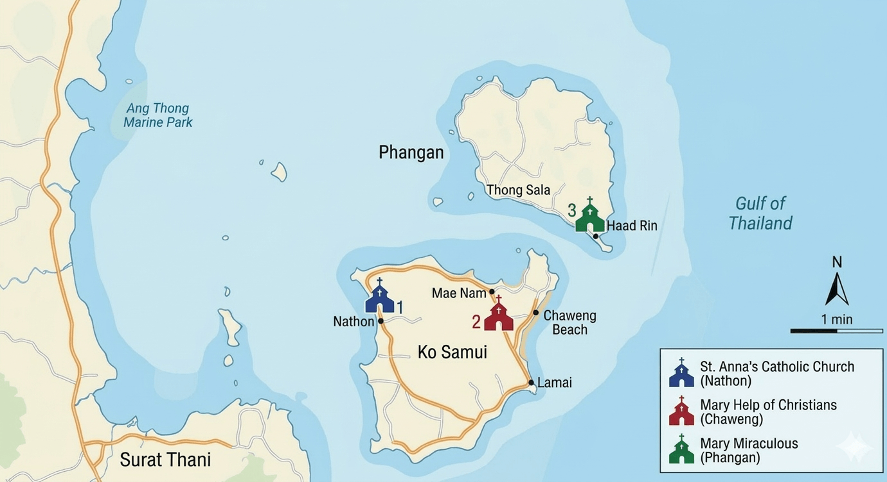

Mass Times • Locations • Community ตารางมิสซา • สถานที่ตั้ง • ชุมชน
Find the nearest Catholic parish during your visit to the Samui archipelago ค้นหาวัดคาทอลิกที่ใกล้ที่สุดระหว่างการเยี่ยมชมหมู่เกาะสมุย

Welcome to the Catholic Community of the Samui Archipelago. Whether you are a local resident or a visitor, we invite you to join us for Holy Mass. ยินดีต้อนรับสู่ ชุมชนคาทอลิกแห่งหมู่เกาะสมุย ไม่ว่าคุณจะเป็นคนในพื้นที่หรือนักท่องเที่ยว เราขอเชิญคุณเข้าร่วมพิธีมิสซากับเรา
| Sunday (Thai)วันอาทิตย์ (ไทย) | 08:30 AM |
Contact Us:ติดต่อเรา:
💬 Join LINE Groupเข้ากลุ่ม LINE f Facebook Pageเพจเฟซบุ๊กNathon Town, West Coastตัวเมืองหน้าทอน, ชายฝั่งตะวันตก
📍 Open in Google Mapsเปิดใน Google Maps| Sunday (English)วันอาทิตย์ (อังกฤษ) | 10:30 AM |
Contact Us:ติดต่อเรา:
👥 Join WhatsApp Groupเข้ากลุ่ม WhatsApp f Facebook Pageเพจเฟซบุ๊กEast Coast, near Chaweng Beachชายฝั่งตะวันออก, ใกล้หาดเฉวง
📍 Open in Google Mapsเปิดใน Google Maps| Saturday (English)วันเสาร์ (อังกฤษ) | 09:30 AM |
Contact Us:ติดต่อเรา:
👥 Join WhatsApp Groupเข้ากลุ่ม WhatsApp f Facebook Groupกลุ่มเฟซบุ๊กHaad Rin Area, Koh Phanganบริเวณหาดริ้น, เกาะพะงัน
📍 Open in Google Mapsเปิดใน Google Maps| Jan 1 | New Year's Dayวันขึ้นปีใหม่ |
| Feb 18 | Ash Wednesdayวันพุธรับเถ้า |
| Holy Week | Thu-Sat: St. Ann (TH) 7:00 PM, Mary Help (EN) 7:00 PMพฤหัส-เสาร์: น.อันนา (ไทย) 19:00 น., แม่พระฯ (อังกฤษ) 19:00 น. |
| Dec 8 | Immaculate Conception of Maryวันแม่พระปฏิสนธินิรมล |
| Dec 24-25 | Christmas Vigil St. Ann (TH) 7:00 PM, Mary Help (EN) 8:30 PM<คืนคริสต์มาส น.อันนา (ไทย) 19:00 น., แม่พระฯ (อังกฤษ) 20:30 น. |
Pastor เจ้าอาวาส
Fr. Michael Meechai Udomdej, C.Ss.R. คพ. มีชัย อุดมเดช, C.Ss.R.
Assistant Pastor รองเจ้าอาวาส
Fr. Anthony Wiboon Limpanawooth, C.Ss.R. คพ. อันตน วิบูลย์ ลิมปนวุฒิ, C.Ss.R.
Your message will be sent directly to Fr. Michael and Fr. Anthony. ข้อความของคุณจะถูกส่งตรงถึงคุณพ่อมีชัยและคุณพ่อวิบูลย์